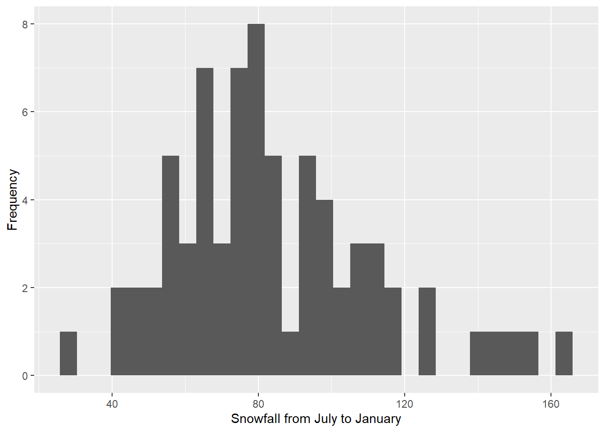
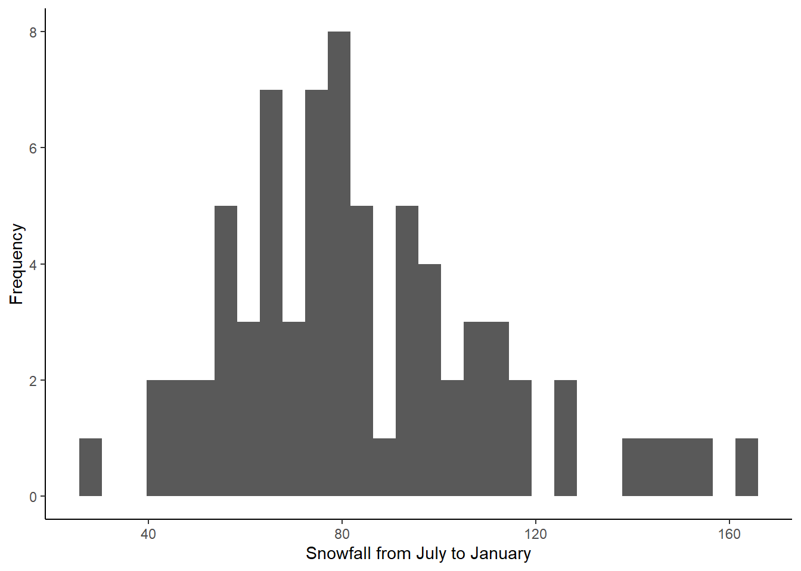

ESS 3500 R Handbook, Lesson 4
Emily Schultz
2023-02-15
Lesson 4: DESCRIPTIVE STATISTICS
In this lesson, we will cover how to calculate descriptive statistics in R and how to create some commons graphs used in exploratory analysis. The good news is, you have already learned some of the descriptive statistics functions, so they will be a review!
We will work with the civu.csv file that you used in the data frame practice problems, so read in that file now (be sure to set your working directory first):
civu <- read.csv("civu.csv")4.1: Central tendency
In class, we discussed three measures of central tendency: mean, median, and mode. Below, we will cover how to calculate each for the “density_2006” variable in the data frame.
You have used the mean function before, but this time we
will calculate the mean of a column in data frame instead of the mean of
a vector:
mean_density <- mean(civu$density_2006)
mean_density## [1] 34.6Calculating the median is similarly intuitive:
median_density <- median(civu$density_2006)Unfortunately, there is not a built-in function for calculating the mode in R, but we have a few options for determining the mode. Likely the easiest is to install DescTools package, which does have a mode function.
install.packages("DescTools")You will only need to run the install packages command once, and then it will be installed on your computer.
To load the package and calculate the mode, run
library(DescTools)## Warning: package 'DescTools' was built under R version 4.2.3mode_density <- Mode(civu$density_2006)
mode_density## [1] 37
## attr(,"freq")
## [1] 20In the output, the top number you will see is the mode. If there are multiple modes, you will see a vector listing all of the modes instead of a single number. The number on the bottom is the frequency of the mode (how often that value appeared in the data set).
There is also a hack we can use to get the mode without downloading a
new package. We will start by using the table function to
create a table of the values in our data set and how frequently they
appeared in the data.
table(civu$density_2006)##
## 17 20 23 24 26 30 31 34 36 37 43 46 52 63
## 10 10 10 10 10 10 10 10 10 20 10 10 10 10In the output, the top row lists the different values in the data set and the bottom row tells you how frequently each of those values appears. With a small data set like ours, we can pretty easily find the value that appears most frequently: 37. With a large data set with many different values, it would be harder to find. To help, we can sort our table, so the most frequent value appears first:
sort(table(civu$density_2006),decreasing = TRUE)##
## 37 17 20 23 24 26 30 31 34 36 43 46 52 63
## 20 10 10 10 10 10 10 10 10 10 10 10 10 10I’ll break down this code for you. The sort function
with sort a set of values in either increasing or decreasing order. The
first argument of the sort function is the set of values.
In this case, the set of values we want is the frequency of the
different values in our data set. Therefore I again used the
table function to recreate our frequency table and used
that as the first argument. The second argument determines whether the
values are sorted in increasing or decreasing order. The default is
increasing (decreasing = FALSE), but we wanted to sort in decreasing
order, so I changed the argument to decreasing = TRUE.
Now when we look at the table, the mode will be the first value(s) in the table, so it is easy to find even with a large data set.
Luckily, the mode is the measure of central tendency we will use the least in this class, and it is often enough to infer it visually from a frequency histogram, which we will learn to make in section 4.3.
4.2 Variation
In this section, you will practice calculating measures of variability in a data set: standard deviation (which you have already learned) and variance (which is just as easy).
We’ll continue working with the “density_2006” variable in our data frame.
Calculate the standard deviation and variance as follows:
sd_density <- sd(civu$density_2006)
sd_density## [1] 12.15559var_density <- var(civu$density_2006)
var_density## [1] 147.7584Notice the relationship between the two. The standard deviation is the square root of the variance, so we could also calculate one from the other.
If you want to calculate the standard error, that can be done using
the MeanSE function in the DescTools
package:
se_density <- MeanSE(civu$density_2006)
se_density## [1] 0.9924998Alternatively, you can calculate it using only standard R functions by dividing the standard deviation by the square root of the sample size.
sd(civu$density_2006)/sqrt(length(civu$density_2006))## [1] 0.9924998The numerator in this calculate is simply the standard deviation
function above. In the denominator, I use a new function
(length) to calculate the number of values in the
density_2006 column (the sample size for that variable), and then I take
the square root of that value.
4.3 Exploratory data visualization
In this section, we will make our first foray into graphing! We will use the ggplot2 package (part of the tidyverse set of packages) for making graphs because it is easier to make nice looking graphs in ggplot than in base R. You used this package in the variability simulation, so you should already have it installed, but if not, install either ggplot2 or tidyverse using one of the two lines below:
install.packages("ggplot2")
install.packages("tidyverse")Then load either one for this session:
library(ggplot2)
library(tidyverse)In this section, you will learn to make three different types of plots that can be useful when doing exploratory data analysis: histograms, scatter plots, and box plots.
Histograms
Histograms are useful for visualizing how our data are distributed. Are they close to a normal (bell-shaped) distribution? Are they skewed? Biomodal? Are there outliers? All of these questions can be answered with a histogram.
We will start by making a histogram of our “density_2006” variable. When you use the ggplot2 package to make graphs, you will start with one line of code that tells ggplot what data to use for your graph. Then you add additional lines of code to create and modify your graph. Here is the code to make a simple histogram, without changing any default settings:
ggplot(data = civu, aes(x = density_2006)) +
geom_histogram() ## `stat_bin()` using `bins = 30`. Pick better value
## with `binwidth`.
In the first line of code above, we start with the
ggplot function. The first argument of the function (data)
is the data frame that contains the data you want to graph (it needs to
be a data frame object). We want to use our civu dataframe.
Next is the aesthetics argument (aes), where you list the variables you
want to graph. Notice that “aes” is followed by parentheses. This is
because you can list multiple variable for this argument, so you put the
list of variable inside the parentheses. For our histogram, we are only
using one variable (density_2006), and this is our x variable. We end
the line with a + sign to indicate that we are adding additional code on
the next line to create the graph. In the second line of code, we are
telling ggplot that we want to use the data from the first line of code
to create a histogram. We don’t need to add any arguments to the
geom_histogram because we already told ggplot what data to
use, and we aren’t changing any default settings.
Now let’s take a look at a few ways we can modify our graph to make
it look nicer. When you look at the graph you made above, notice that
the bins look uneven in their width and their are some gaps. This is
because the default is to split the data into 30 different bins (ranges
of data), but our data set is pretty small, so we don’t really need that
many bins. We will thus add the bins argument to the
geom_histogram function to change the number of bins to
10.
ggplot(data = civu, aes(x = density_2006)) +
geom_histogram(bins = 10)
Now let’s change our axis labels. “density_2006” is sensible for a
column heading because it doesn’t have any spaces, but it looks a little
odd on a graph. I also like to start my axis titles with a capital
letter. We will add another line to the code with the labs
function to change the axis labels. Don’t forget to add a plus sign to
the end of the geom_histogram line to indicate that you are adding more
code for the graph below.
ggplot(data = civu, aes(x = density_2006)) +
geom_histogram(bins = 10) +
labs(x = "Density in 2006", y = "Frequency")
I also find the grey background to be distracting, so we will change the theme to get rid of the background. Again, we will add another line of code, so add the plus sign to the end of the labs line.
ggplot(data = civu, aes(x = density_2006)) +
geom_histogram(bins = 10) +
labs(x = "Density in 2006", y = "Frequency") +
theme_classic()
Now we have a histogram that both shows us the distribution of our data and looks pretty nice!
Scatter plots
Scatter plots are a good way to visualize the relationship between two continuous variable, so we can see how strongly they might be correlated and whether the relationship is positive or negative.
Here, we will make a scatter plot to show the relationship between density_2006 and density_2007.
ggplot(data = civu, aes(x = density_2006, y = density_2007)) +
geom_point()Notice the code is very similar to what we used to make the
histogram. The first line is identical, except that we add a second
variable, our y variable, in the aes argument. The second line is
similar, except that we use the geom_point function to
create a graph instead of a histogram.
Now let’s also change our axis labels and theme, as we did for the histogram:
ggplot(data = civu, aes(x = density_2006, y = density_2007)) +
geom_point() +
labs(x = "Density in 2006", y = "Density in 2007") +
theme_classic()Box plots
Box plots allow us to visualize the effect of a categorical independent variable on a continuous dependent variable. We will make a box plot showing how the herbivory treatment affected the density_2006 variable.
First, we need to change the herbivory variable from an integer variable to a factor variable, because we are using herbivory as a categorical variable. We did this in the data frame practice problems as well.
civu$herbivory <- as.character(civu$herbivory)Now we are ready to make our box plot. The set up will be similar to the code for the previous plots, except we are changing our x and y variables in the first line of code and changing our plot type in the second line of code. We will also change the axis labels and theme in this plot.
ggplot(data = civu, aes(x = herbivory, y = density_2006)) +
geom_boxplot() +
labs(x = "Herbivory treatment", y = "Density in 2006") +
theme_classic()
If you are unfamiliar with box plots, they show both a measure of the central tendency (usually the median) and the variation in the dependent variable for each category. The median for each group is shown by the bar in the middle of each box. The boxes show the inter-quartile range (i.e., the bottom of the box showes the first quartile and the topr of the box shows the third quartile). Therefore, 50% of the values in the data fall within the box. The whiskers (vertical lines you might see below and/or above the box) show the smallest and largest values in the data set that are no farther than 1.5 times the inter-quartile range from the first and third quartile, respectively.
There are many different types of graphs and ways we can modify our graphs using ggplot. We will cover some of these in future lessons as we get into inferential statistics. But these three types of graphs will give you a good starting point for exploring your own data sets!